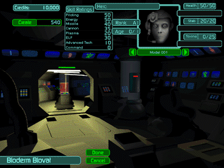

This is where you create Bioderms from a base genetic matrix (BGM) pool.
At the beginning of your career, you are assigned the rank of Ensign. As an Ensign, you are allowed to command three Bioderms and three Hercs, although the two of each already assigned for you are all that are necessary to complete the Training Mission. Once you complete the Training Mission and advance to Unit Leader, you will have access to a pool of 20 BGM models. You are allowed to create four Bioderms as a Unit Leader, but you will find that most BGM models will be too expensive to purchase until you complete a few missions. (Remember, you also need to purchase a Herc to link to each Bioderm.)
The Bioderm Rank and Age of each Bioderm is listed to the left of its image. Its Health, Genetic Stability and Toxin Levels are listed to the right. Also listed to the left are the Bioderm’s Skill Ratings in eight categories. Click on any of these. The cost in credits is shown just to the right of the Create button.
 |
Use the left and right arrow buttons to scroll through the list of available Bioderms. Scroll to your Biderm of choice, then click the Create button to bring them to life. The created Bioderm is named after its BGM model as a default (Example: Tola). It is recommended that you give each Bioderm a distinctive name to distinguish them from one another on the Battlefield. (To do this, click on their names while in the Link, VREC, or Medvat areas.) When you are finished, the image of the Bioderm converts to color and the cost is subtracted from your total credits. |